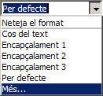
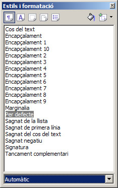
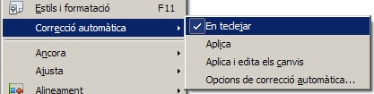
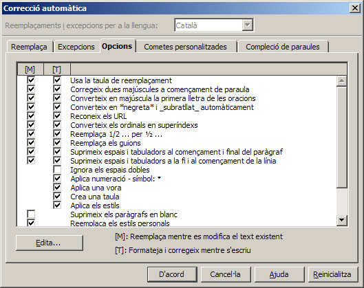

L'objectiu d'aquesta pràctica és treballar, de forma senzilla, els estils de paràgraf i practicar la formatació automàtica.
Aplicar estils de paràgraf
Per canviar l'estil d'un paràgraf del document, cal situar-se en qualsevol punt del paràgraf que es vol modificar (no cal seleccionar-lo) i desplegar la llista d'estils de paràgraf disponibles fent clic, amb el ratolí, al triangle invertit de l'eina Aplica l'estil de la barra d'eines Formatació. A continuació, s'escull amb el ratolí l'estil desitjat.
En desplegar l'eina Aplica l'estil, disposareu de 5 estils de paràgraf: 
- Cos del text
- Encapçalament 1
- Encapçalament 2
- Encapçalament 3
- Per defecte
Una opció que permet eliminar els estils manuals o els estils de paràgrafs adjudicats a una zona del text:
- Neteja el format
 Per últim, l'opció Més… de l'eina Aplica l'estil us ofereix la possibilitat de mostrar la finestra Estils i formatació amb què podreu aplicar, crear, editar, afegir i eliminar estils de format. En aquesta finestra podreu escollir entre estils de paràgraf, de caràcter, de marcs, de pàgina i de pics i llistes numerades.
El desplegable de la part inferior d'aquesta finestra us permetrà mostrar, només, les categories d'estils, de cada tipus, que siguin del vostre interès.
En altres mòduls i pràctiques del curs es parlarà més àmpliament dels estils de paràgraf i de pàgines i de com aplicar-los, crear-los o modificar-los.
Formatació automàtica
El LibreOffice Writer pot anar donant format al document a mesura que es va escrivint. Si voleu que l'autoformat sigui actiu mentre escriviu, cal que sigui activa l'opció Format | Correcció automàtica | En teclejar. 
- L'opció Aplica aplica al document els canvis definits en les opcions de correcció automàtica.
- L'opció Aplica i edita els canvis mostrarà un diàleg que permet escollir quins canvis s'aplicaran i quins no.
Les opcions que s'aplicaran seran aquelles que s'hagin activat en Eines | Opcions de correcció automàtica | (pestanya) Opcions. En la figura següent, a la columna [T], podeu observar un exemple de quines són les opcions actives o inactives que s'aplicaran per a la correcció automàtica. 
- Activeu lel LibreOffice Writer.
- Assegureu-vos que l'estil actiu és el Per defecte (observeu el contingut de l'eina Aplica l'estil).
- Demaneu Eines | Opcions de correcció automàtica | (pestanya) Opcions i comproveu que les opcions de la columna [T] són les que apareixen a la figura d'abans. Si fos el cas, activeu o desactiveu les opcions adients.
- Premeu el botó D'acord per desar els canvis.
- Escriviu Activitats (sobretot, no escriviu cap signe de puntuació al final d'aquest text) i premeu, dos cops, la tecla Retorn.
Observeu que l'aspecte del text haurà canviat i es mostrarà amb l'estil Encapçalament 1 (lletra Arial de 16.1 punts de grandària i Negreta). Observeu, també, que l'estil de text per a la nova línia és Cos del text. - Escriviu 1. Cerca al text els mots aguts. No oblideu el punt al costat de la xifra i l'espai en blanc entre el punt i la paraula Cerca.
- Premeu la tecla Retorn per canviar de línia. En fer-ho, observareu que haurà canviat l'aspecte de la línia de text, que haurà aparegut la barra d'eines Pics i numeració i que la següent línia de text continuarà la numeració.
- Escriviu un parell de línies més i acabeu, cada una, prement la tecla Retorn:
- Afegeix l'accent, si s'escau, en aquests mots.
- Encercla els mots aguts que no hagin de dur accent.
- Premeu dos cops la tecla Retorn en finalitzar la línia número 3. Observeu que es desactiva la numeració. Premeu, un altre cop més, la tecla Retorn per deixar una línia en blanc.
- Proveu de crear els següents elements de formatació automàtica:
- Pics: utilitzant un guió (-), un signe més (+) o un asterisc (*), seguit d'un espai en blanc i una línia de text. Recordeu de prémer dos cops la tecla Retorn per desactivar els pics.
- Línies horitzontals: utilitzant tres guions ( - ), tres guions baixos ( _ ), tres signes igual ( = ), tres asteriscos ( * ), tres titlles ( ~ ) o tres diesis ( # ).
- Taules: dibuixant-les amb una combinació de signes més ( + ) i signes menys ( - )
+——+———————-+——+ - Negreta: escrivint la frase entre asteriscos
*Text en negreta*. - Subratllat: escrivint la frase entre guions baixos
_Text subratllat_. - Caràcters de fracció: escrivint 1/2, 1/4, 3/4.
- Sortiu de l'LibreOffice Writer descartant els canvis.

|
|

|
|